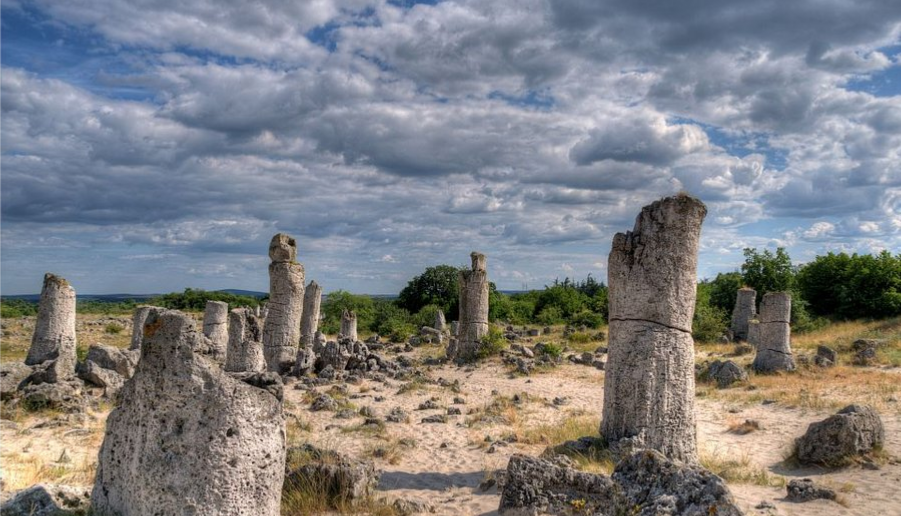
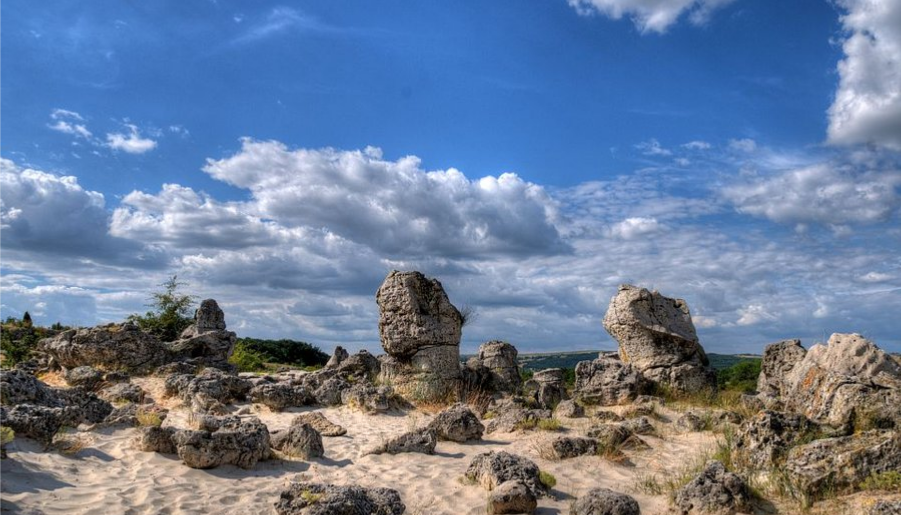
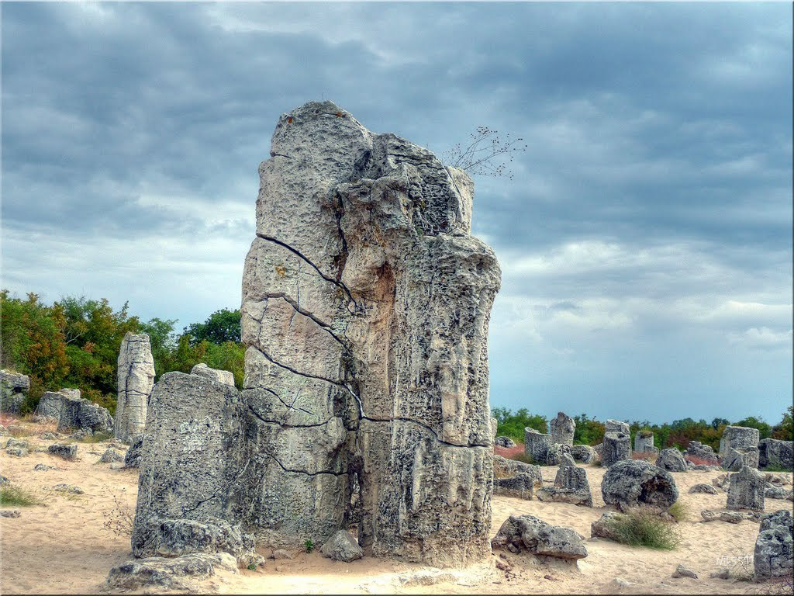

Разположение и достъп
Природният феномен "Побитите камъни", известен още като "Каменната гора" и "Дикилиташ”, е разположен на площ от 7кв. км, на около 18-20км от гр. Варна и на няколко километра от гр. Белослав.
До “Побити камъни” може да стигнете с автомобил или с автобусна линия № 43 до спирка "Разклон Баново" в с. Слънчево.
Описание
Природният феномен “Побити камъни”, разположен на север и юг от Белославското езеро, представлява разкрития на еоценски пясъци, сред които са разположени изправени каменни колони, наподобяващи каменна гора. Впечатляващият ландшафт на побитите камъни се наблюдава в седем големи и няколко по-малки разкрития.
Природната забележителност представлява ансамбъл от каменни колони, високи до 10м, кухи или плътни цилиндри, пресечени конуси, различни по форма и големина скални блокове и множество каменни късове, разпилени по целия комплекс.
От хилядолетия природата извайва каменните късове, за да ги превърне във впечатляващи скулптури, наподобяващи хора, животни, чудовища, митични същества. "Каменните стражи", "Камилата”, "Трона", "Каменната гора" са имената само на част от тези природни пластики.
Най-известният и атрактивен за туристите е ансамбълът "Дикилиташка група". Намира се на около 18км западно от гр. Варна и е лесно достъпен по шосе Е70. Комплексът се състои от над 300 различни по големина колони, разположени в ивица с размери 850мх120м и около 50 структури в по-малко петно на юг. Някои от колоните са счупени на две или три части, други лежат на земята, сякаш са били изтръгнати от местата си, трети образуват интересни скулптурни групи.
"Страшимировската група" също е много впечатляваща. Разположена е на юг от основната група, до с. Страшимирово и е съставена от четири близки един до друг ансамбъла с много различни по големина и форма структури. Характерна особеност на колоните тук е, че са издути по средата, сякаш два пресечени конуса са слепени за основите си, като някои от тях достигат до 9м в диаметър.
Групите "Слънчево" и "Баново"са разположени в околностите на едноименните села и също имат своето очарование. Една каменна скулптура наподобява замръзнал фонтан, в съседство лежи каменен лъв с диаметър в основата над 12м, на друго място се виждат колосални гъби, а при добро въображение ще различите и други форми.
Произход
За произхода на „Побитите камъни” са предложени много хипотези, които могат да бъдат обединени в две основни групи, първата от които застъпва неорганичния произход на колоните, а втората - техния органичен произход.
При първата група твърденията предполагат механично оформяне на структурите чрез ерозионни процеси под действието на атмосферата и водата, морския прибой, изветряне или инфилтрация на подпочвени води.
Според привържениците на органичния произход каменните колони са останки от коралови рифове, вкаменени газови извори, биогенни водораслови струпвания или вкаменена гора. Все още не може да се каже със сигурност коя от тези хипотези отразява най-точно възникването на този феномен, но всички те изключват идеята, че са творение на човека. Това ясно може да се види в група Кариера-Белослав, където са разкрити и четирите нива на Побитите камъни.
История

"Побитите камъни" са били известни като сакрално място от дълбока древност, но за първи път са документирани през 1829г.
Най-впечатляващите групи Побити камъни (“Център-юг”, ”Белослав-запад”, ”Слънчево-югоизток”), още през 1938 година са сред първите защитени територии в България. По-късно с няколко последователни акта са защитени общо 14 групи с площ 253,3 хектара, а със Заповед на Министъра на околната среда и водите през 2002г. природната забележителност е прекатегоризирана в защитена местност. “Побити камъни” е защитена зона в мрежата Натура 2000, обявена с цел опазването на най-големите в страната вътрешни пясъчни хабитати със специфична флора, растителност и животински свят.
В района на побитите камъни са намерени единствените за България доказателства за живот на човека през мезолита.